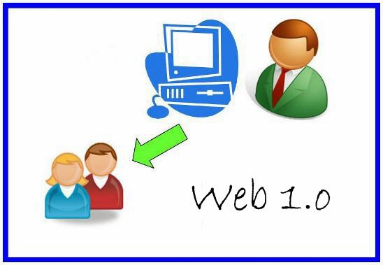
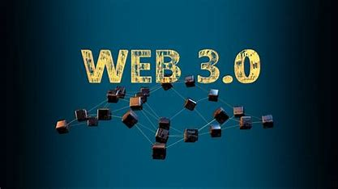

| Hitos | Hechos | Imagenes | Referenncias |
|---|---|---|---|
| Web 1.0 La web |
El término Web 1.0 no apareció hasta que el término Web 2.0 fue acuñado en 1999 por Darci DiNucci . Durante ese tiempo, la web estaba experimentando una gran transformación. La mayoría de los sitios web en la década de 1990 se habían creado originalmente con páginas HTML estáticas y algunos estilos simples incrustados en el marcado HTML. A fines de la década de 1990 y principios de la década de 2000, las características interactivas del sitio web redefinieron lo que se podía lograr en un navegador web y marcaron un punto importante de evolución en el mundo del desarrollo web. |  |
|
| Web 2.0 Web social |
La Web 2.0 supone un paso adelante en la evolución de Internet, para incorporar al usuario como un agente activo en su funcionamiento, y no como un mero cliente o receptor de la información. Esto pasa por sitios web dinámicos, en los que al usuario se le permita interactuar, generar contenido, o formar parte de comunidades virtuales. El término se originó en 2004, producto de la conferencia de Tim O’Reilly sobre el futuro de Internet, y juega con la denominación usual para los programas informáticos (1.0, 1.1., 1.2, 2.0, etc.) a medida que se actualizan y mejoran. Sin embargo, no se refiere realmente a una mejoría técnica de la red, como a una manera distinta de entenderla. | ||
| Web 3.0 Web semantica |
En web3, los desarrolladores no suelen crear e implementar aplicaciones que se ejecuten en un único servidor o que almacenen sus datos en una única base de datos (generalmente alojada y administrada por un único proveedor de nube). En su lugar, las aplicaciones web3 se ejecutan en cadenas de bloques, redes descentralizadas de muchos nodos compañero a compañero (servidores) o una combinación de los dos que forma un protocolo criptoeconómico. Estas aplicaciones a menudo se conocen como dapps (aplicaciones descentralizadas), y verás que ese término se usa a menudo en el espacio web3. Para lograr una red descentralizada estable y segura, se incentiva a los participantes de la red (desarrolladores) y compiten para proporcionar servicios de la más alta calidad a cualquier persona que use el servicio. |  | |
| Web 4.0 Web Ubicua |
Es el próximo gran avance y se centra en ofrecer un comportamiento más inteligente, más predictivo, demodo que podamos con sólo realizar una afirmación poner en marca un conjunto de acciones que tendrán como resultando aquello que pedimos o decimos. |